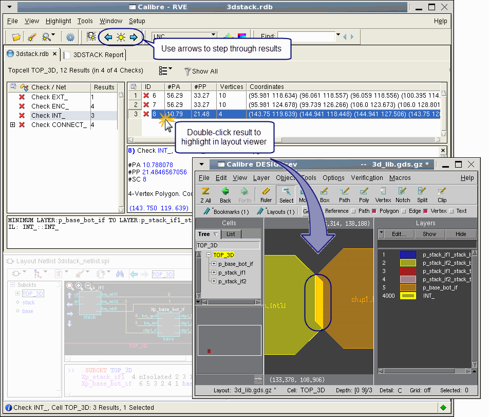

Use Calibre RVE
to highlight DRC results from a Calibre 3DSTACK run. DRC results
are produced by the geometrical rule checks in the 3DSTACK rule
file.
For
advanced connectivity debugging using Calibre 3DSTACK DFM databases,
follow the procedure described in “Debugging Connectivity Errors in Calibre 3DSTACK”.
Procedure
- Load the Calibre 3DSTACK assembly
in a supported layout editor and launch Calibre RVE with the Calibre 3DSTACK
RDB file. For Calibre DESIGNrev:
calibredrv 3dstack_assembly.oas -rve 3dstack.rdb
Calibre DESIGNrev displays
a top-level view of the assembled 3D chip stack. Calibre RVE displays
results for each check defined in the Calibre 3DSTACK rule_file.
Tip It is
also possible to debug a design by viewing the Calibre 3DSTACK report
file (generated with the report command). The report file can
be opened from the Report tab in Calibre RVE, or in any supported
text viewer. Refer to the Report File Format in Appendix C for more details
on report files.
- Choose Clear Existing
Highlights from the Calibre RVE Highlight options dropdown menu.
This option causes Calibre
RVE to clear existing highlights before creating a new highlight.
- Select the check you want
to view in the tree view, or use Shift- and Ctrl-click to select multiple
checks.
- In the detailed view, double-click
on a result to highlight it, as shown in Figure 1, or use the highlight toolbar. Browse
each result by clicking the next and previous icons ().
Figure 1. Highlighting
DRC Results from a Calibre 3DSTACK Run
Figure 1 shows an internal check result highlighted in Calibre
DESIGNrev. See “Using Calibre RVE for DRC” in the Calibre RVE User’s Manual for
more information on debugging with Calibre RVE for DRC.
Tip You can
also view DRC errors in the context of the separate components for
the assembly. To do this, open the design (the base chip, for example)
in your layout viewer, then highlight the result using Calibre RVE.
Results
You performed the following actions
while completing this procedure:
You can control the highlighting behavior
in Calibre RVE from your rule file by applying check text override
comments.
For complete details, see “-set_rve_cto_file” and “-set_auto_rve_show_layers”.